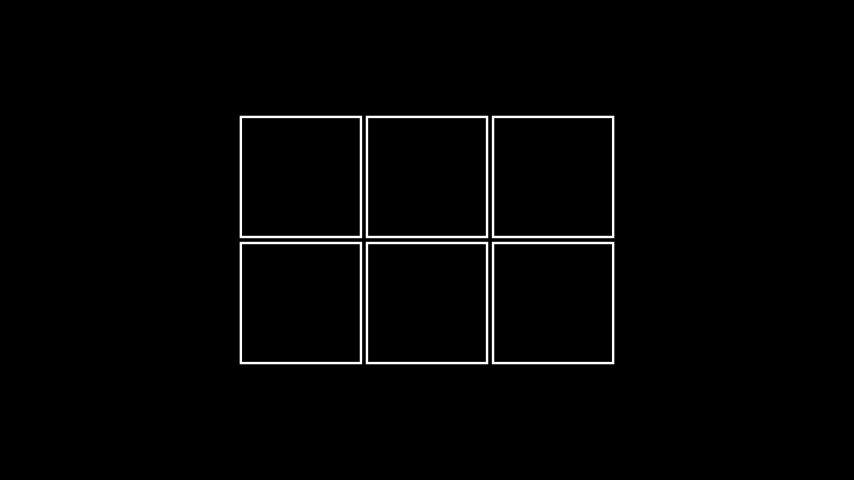
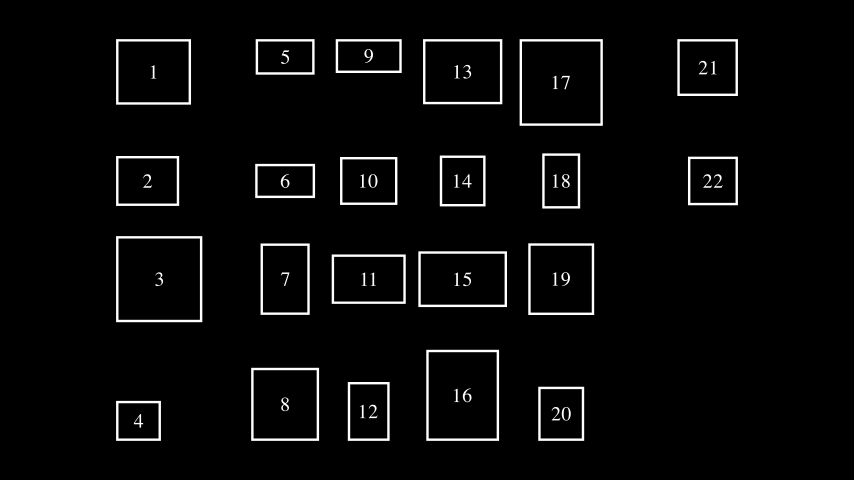
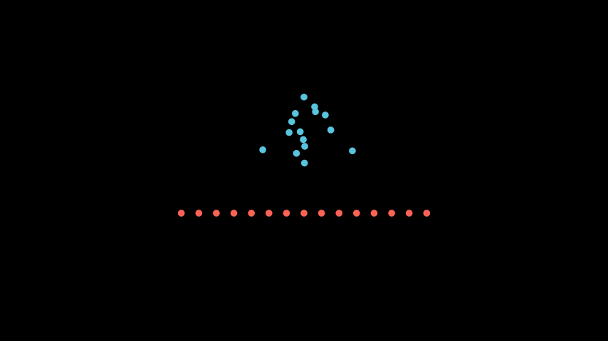
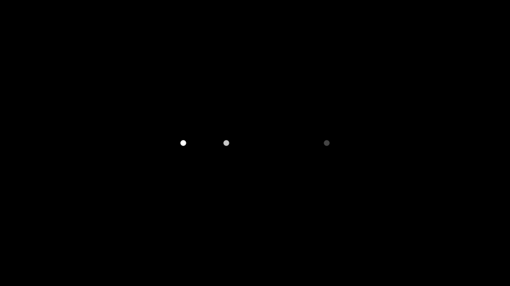

Mobject#
Qualified name: manim.mobject.mobject.Mobject
- class Mobject(color='#FFFFFF', name=None, dim=3, target=None, z_index=0)[源代码]#
基类：
objectMathematical Object: base class for objects that can be displayed on screen.
There is a compatibility layer that allows for getting and setting generic attributes with
get_*andset_*methods. Seeset()for more details.Methods
Add mobjects as submobjects.
Add an animation override.
Add a BackgroundRectangle as submobject.
add_background_rectangle_to_family_members_with_pointsadd_background_rectangle_to_submobjectsadd_n_more_submobjectsAdd all passed mobjects to the back of the submobjects.
Add an update function to this mobject.
Aligns the data of this mobject with another mobject.
Direction just needs to be a vector pointing towards side or corner in the 2d plane.
align_pointsalign_points_with_largeralign_submobjectsAligns mobject to another
Mobjectin a certain direction.Returns the function defining a specific animation override for this class.
Applies a complex function to a
Mobject.apply_functionapply_function_to_positionapply_function_to_submobject_positionsapply_matrixapply_over_attr_arraysapply_points_function_about_pointApply a function to
selfand every submobject with points recursively.Sorts
Mobjectnext to each other on screen.Arrange submobjects in a grid.
Arrange the position of
submobjectswith a small buffer.Edit points, colors and submobjects to be identical to another
MobjectcenterRemove every updater.
Create and return an identical copy of the
Mobjectincluding allsubmobjects.fadefade_tofamily_members_with_pointsFlips/Mirrors an mobject about its center.
Initializes
pointsand therefore the shape.generate_targetget_all_pointsget_array_attrsGet bottom coordinates of a box bounding the
Mobjectget_boundary_pointGet center coordinates
get_center_of_massReturns the color of the
MobjectMeant to generalize
get_x,get_yandget_zGet corner coordinates for certain direction.
Picture a box bounding the
Mobject.Get edge coordinates for certain direction.
Returns the point, where the stroke that surrounds the
Mobjectends.get_extremum_along_dimget_familyget_family_updatersget_group_classget_imageGet left coordinates of a box bounding the
Mobjectget_merged_arrayGet coordinates of the middle of the path that forms the
Mobject.Get nadir (opposite the zenith) coordinates of a box bounding a 3D
Mobject.get_num_pointsget_piecesThe simplest
Mobjectto be transformed to or from self.get_points_defining_boundaryGet right coordinates of a box bounding the
MobjectReturns the point, where the stroke that surrounds the
Mobjectstarts.Returns starting and ending point of a stroke as a
tuple.Return all updaters using the
dtparameter.Get top coordinates of a box bounding the
MobjectReturn all updaters.
Returns x coordinate of the center of the
MobjectasfloatReturns y coordinate of the center of the
MobjectasfloatReturns z coordinate of the center of the
Mobjectasfloatget_z_index_reference_pointGet zenith coordinates of a box bounding a 3D
Mobject.Check if
Mobjectdoes not contains points.Check if
Mobjectcontains points.Test if
selfhas a time based updater.Initializes the colors.
Turns this
Mobjectinto an interpolation betweenmobject1andmobject2.interpolate_colorInverts the list of
submobjects.is_off_screenMeasure the length of an
Mobjectin a certain direction.Match the color with the color of another
Mobject.Match the coordinates with the coordinates of another
Mobject.Match the depth with the depth of another
Mobject.Match the specified dimension with the dimension of another
Mobject.Match the height with the height of another
Mobject.Edit points, positions, and submobjects to be identical to another
Mobject, while keeping the style unchanged.Match the updaters of the given mobject.
Match the width with the width of another
Mobject.Match x coord.
Match y coord.
Match z coord.
Move center of the
Mobjectto certain coordinate.nonempty_submobjectsIf a
Mobjectwith points is being aligned to one without, treat both as groups, and push the one with points into its own submobjects list.point_from_proportionpose_at_angleproportion_from_pointpush_self_into_submobjectsput_start_and_end_onreduce_across_dimensionRemove
submobjects.Remove an updater.
This can make transition animations nicer
repeat_submobjectreplacerescale_to_fitSets
pointsto be an empty array.Restores the state that was previously saved with
save_state().Enable updating from updaters and animations.
reverse_pointsRotates the
Mobjectabout a certain point.Rotates the
Mobjectabout the ORIGIN, which is at [0,0,0].Saves an image of only this
Mobjectat its position to a png file.Save the current state (position, color & size).
Scale the size by a factor.
Scales the
Mobjectto fit a depth while keeping width/height proportional.Scales the
Mobjectto fit a height while keeping width/depth proportional.Scales the
Mobjectto fit a width while keeping height/depth proportional.Sets attributes.
Condition is function which takes in one arguments, (x, y, z).
set_color_by_gradientset_colors_by_radial_gradientset_coordSets the default values of keyword arguments.
set_submobject_colors_by_gradientset_submobject_colors_by_radial_gradientSet x value of the center of the
Mobject(intorfloat)Set y value of the center of the
Mobject(intorfloat)Set z value of the center of the
Mobject(intorfloat)Sets the
Mobject’sz_indexto the value specified in z_index_value.Sets the
Mobject’s z coordinate to the value ofz_index.Shift by the given vectors.
shift_onto_screenshowShuffles the list of
submobjects.Shuffles the order of
submobjectsSorts the list of
submobjectsby a function defined bysubmob_func.Sort the
submobjectsspace_out_submobjectssplitstretchstretch_about_pointStretches the
Mobjectto fit a depth, not keeping width/height proportional.Stretches the
Mobjectto fit a height, not keeping width/depth proportional.Stretches the
Mobjectto fit a width, not keeping height/depth proportional.surroundDisable updating from updaters and animations.
throw_error_if_no_pointsto_cornerto_edgeto_original_colorApply all updaters.
wagAttributes
Used to animate the application of any method of
self.animation_overridesMobject 的深度。
Mobject 的高度。
The width of the mobject.
- add(*mobjects)[源代码]#
Add mobjects as submobjects.
The mobjects are added to
submobjects.Subclasses of mobject may implement
+and+=dunder methods.- 参数
mobjects (manim.mobject.mobject.Mobject) – The mobjects to add.
- 返回
self- 返回类型
- 引发
ValueError – When a mobject tries to add itself.
TypeError – When trying to add an object that is not an instance of
Mobject.
提示
A mobject cannot contain itself, and it cannot contain a submobject more than once. If the parent mobject is displayed, the newly-added submobjects will also be displayed (i.e. they are automatically added to the parent Scene).
实际案例
>>> outer = Mobject() >>> inner = Mobject() >>> outer = outer.add(inner)
Duplicates are not added again:
>>> outer = outer.add(inner) >>> len(outer.submobjects) 1
Adding an object to itself raises an error:
>>> outer.add(outer) Traceback (most recent call last): ... ValueError: Mobject cannot contain self
- classmethod add_animation_override(animation_class, override_func)[源代码]#
Add an animation override.
This does not apply to subclasses.
- 参数
- 引发
MultiAnimationOverrideException – If the overridden animation was already overridden.
- add_background_rectangle(color=None, opacity=0.75, **kwargs)[源代码]#
Add a BackgroundRectangle as submobject.
The BackgroundRectangle is added behind other submobjects.
This can be used to increase the mobjects visibility in front of a noisy background.
- 参数
color (Optional[manim.utils.color.Colors]) – The color of the BackgroundRectangle
opacity (float) – The opacity of the BackgroundRectangle
kwargs – Additional keyword arguments passed to the BackgroundRectangle constructor
- 返回
self- 返回类型
- add_to_back(*mobjects)[源代码]#
Add all passed mobjects to the back of the submobjects.
If
submobjectsalready contains the given mobjects, they just get moved to the back instead.- 参数
mobjects (manim.mobject.mobject.Mobject) – The mobjects to add.
- 返回
self- 返回类型
注解
Technically, this is done by adding (or moving) the mobjects to the head of
submobjects. The head of this list is rendered first, which places the corresponding mobjects behind the subsequent list members.- 引发
ValueError – When a mobject tries to add itself.
TypeError – When trying to add an object that is not an instance of
Mobject.
- 参数
mobjects (manim.mobject.mobject.Mobject) –
提示
A mobject cannot contain itself, and it cannot contain a submobject more than once. If the parent mobject is displayed, the newly-added submobjects will also be displayed (i.e. they are automatically added to the parent Scene).
- add_updater(update_function, index=None, call_updater=False)[源代码]#
Add an update function to this mobject.
Update functions, or updaters in short, are functions that are applied to the Mobject in every frame.
- 参数
update_function (Union[Callable[[manim.mobject.mobject.Mobject], None], Callable[[manim.mobject.mobject.Mobject, float], None]]) – The update function to be added. Whenever
update()is called, this update function gets called usingselfas the first parameter. The updater can have a second parameterdt. If it uses this parameter, it gets called using a second valuedt, usually representing the time in seconds since the last call ofupdate().index (Optional[int]) – The index at which the new updater should be added in
self.updaters. In caseindexisNonethe updater will be added at the end.call_updater (bool) – Whether or not to call the updater initially. If
True, the updater will be called usingdt=0.
- 返回
self- 返回类型
实际案例
Example: NextToUpdater ¶
from manim import * class NextToUpdater(Scene): def construct(self): def dot_position(mobject): mobject.set_value(dot.get_center()[0]) mobject.next_to(dot) dot = Dot(RIGHT*3) label = DecimalNumber() label.add_updater(dot_position) self.add(dot, label) self.play(Rotating(dot, about_point=ORIGIN, angle=TAU, run_time=TAU, rate_func=linear))
Example: DtUpdater ¶
from manim import * class DtUpdater(Scene): def construct(self): line = Square() #Let the line rotate 90° per second line.add_updater(lambda mobject, dt: mobject.rotate(dt*90*DEGREES)) self.add(line) self.wait(2)
- align_data(mobject, skip_point_alignment=False)[源代码]#
Aligns the data of this mobject with another mobject.
Afterwards, the two mobjects will have the same number of submobjects (see
align_submobjects()), the same parent structure (seenull_point_align()). Ifskip_point_alignmentis false, they will also have the same number of points (seealign_points()).- 参数
mobject (manim.mobject.mobject.Mobject) – The other mobject this mobject should be aligned to.
skip_point_alignment (bool) – Controls whether or not the computationally expensive point alignment is skipped (default: False).
- align_on_border(direction, buff=0.5)[源代码]#
Direction just needs to be a vector pointing towards side or corner in the 2d plane.
- align_to(mobject_or_point, direction=array([0., 0., 0.]), alignment_vect=array([0., 1., 0.]))[源代码]#
Aligns mobject to another
Mobjectin a certain direction.Examples: mob1.align_to(mob2, UP) moves mob1 vertically so that its top edge lines ups with mob2’s top edge.
mob1.align_to(mob2, alignment_vect = RIGHT) moves mob1 horizontally so that it’s center is directly above/below the center of mob2
- 参数
mobject_or_point (Union[manim.mobject.mobject.Mobject, numpy.ndarray, List]) –
- property animate#
Used to animate the application of any method of
self.Any method called on
animateis converted to an animation of applying that method on the mobject itself.For example,
square.set_fill(WHITE)sets the fill color of a square, whilesquare.animate.set_fill(WHITE)animates this action.Multiple methods can be put in a single animation once via chaining:
self.play(my_mobject.animate.shift(RIGHT).rotate(PI))
警告
Passing multiple animations for the same
Mobjectin one call toplay()is discouraged and will most likely not work properly. Instead of writing an animation likeself.play(my_mobject.animate.shift(RIGHT), my_mobject.animate.rotate(PI))
make use of method chaining.
Keyword arguments that can be passed to
Scene.play()can be passed directly after accessing.animate, like so:self.play(my_mobject.animate(rate_func=linear).shift(RIGHT))
This is especially useful when animating simultaneous
.animatecalls that you want to behave differently:self.play( mobject1.animate(run_time=2).rotate(PI), mobject2.animate(rate_func=there_and_back).shift(RIGHT), )
实际案例
Example: AnimateExample ¶
from manim import * class AnimateExample(Scene): def construct(self): s = Square() self.play(Create(s)) self.play(s.animate.shift(RIGHT)) self.play(s.animate.scale(2)) self.play(s.animate.rotate(PI / 2)) self.play(Uncreate(s))
Example: AnimateChainExample ¶
from manim import * class AnimateChainExample(Scene): def construct(self): s = Square() self.play(Create(s)) self.play(s.animate.shift(RIGHT).scale(2).rotate(PI / 2)) self.play(Uncreate(s))
Example: AnimateWithArgsExample ¶
from manim import * class AnimateWithArgsExample(Scene): def construct(self): s = Square() c = Circle() VGroup(s, c).arrange(RIGHT, buff=2) self.add(s, c) self.play( s.animate(run_time=2).rotate(PI / 2), c.animate(rate_func=there_and_back).shift(RIGHT), )
警告
.animatewill interpolate the
Mobjectbetween its points prior to.animateand its points after applying.animateto it. This may result in unexpected behavior when attempting to interpolate along paths, or rotations. If you want animations to consider the points between, consider usingValueTrackerwith updaters instead.
- classmethod animation_override_for(animation_class)[源代码]#
Returns the function defining a specific animation override for this class.
- apply_complex_function(function, **kwargs)[源代码]#
Applies a complex function to a
Mobject. The x and y coordinates correspond to the real and imaginary parts respectively.示例
Example: ApplyFuncExample ¶
from manim import * class ApplyFuncExample(Scene): def construct(self): circ = Circle().scale(1.5) circ_ref = circ.copy() circ.apply_complex_function( lambda x: np.exp(x*1j) ) t = ValueTracker(0) circ.add_updater( lambda x: x.become(circ_ref.copy().apply_complex_function( lambda x: np.exp(x+t.get_value()*1j) )).set_color(BLUE) ) self.add(circ_ref) self.play(TransformFromCopy(circ_ref, circ)) self.play(t.animate.set_value(TAU), run_time=3)
- apply_to_family(func)[源代码]#
Apply a function to
selfand every submobject with points recursively.- 参数
func (Callable[[manim.mobject.mobject.Mobject], None]) – The function to apply to each mobject.
funcgets passed the respective (sub)mobject as parameter.- 返回
self- 返回类型
参见
family_members_with_points()
- arrange(direction=array([1., 0., 0.]), buff=0.25, center=True, **kwargs)[源代码]#
Sorts
Mobjectnext to each other on screen.实际案例
Example: Example ¶
from manim import * class Example(Scene): def construct(self): s1 = Square() s2 = Square() s3 = Square() s4 = Square() x = VGroup(s1, s2, s3, s4).set_x(0).arrange(buff=1.0) self.add(x)
- 参数
direction (Sequence[float]) –
- arrange_in_grid(rows=None, cols=None, buff=0.25, cell_alignment=array([0., 0., 0.]), row_alignments=None, col_alignments=None, row_heights=None, col_widths=None, flow_order='rd', **kwargs)[源代码]#
Arrange submobjects in a grid.
- 参数
rows (Optional[int]) – The number of rows in the grid.
cols (Optional[int]) – The number of columns in the grid.
buff (Union[float, Tuple[float, float]]) – The gap between grid cells. To specify a different buffer in the horizontal and vertical directions, a tuple of two values can be given -
(row, col).cell_alignment (numpy.ndarray) – The way each submobject is aligned in its grid cell.
row_alignments (Optional[str]) – The vertical alignment for each row (top to bottom). Accepts the following characters:
"u"- up,"c"- center,"d"- down.col_alignments (Optional[str]) – The horizontal alignment for each column (left to right). Accepts the following characters
"l"- left,"c"- center,"r"- right.row_heights (Optional[Iterable[Optional[float]]]) – Defines a list of heights for certain rows (top to bottom). If the list contains
None, the corresponding row will fit its height automatically based on the highest element in that row.col_widths (Optional[Iterable[Optional[float]]]) – Defines a list of widths for certain columns (left to right). If the list contains
None, the corresponding column will fit its width automatically based on the widest element in that column.flow_order (str) – The order in which submobjects fill the grid. Can be one of the following values: “rd”, “dr”, “ld”, “dl”, “ru”, “ur”, “lu”, “ul”. (“rd” -> fill rightwards then downwards)
- 返回
self- 返回类型
- 引发
ValueError – If
rowsandcolsare too small to fit all submobjects.ValueError – If
cols,col_alignmentsandcol_widthsorrows,row_alignmentsandrow_heightshave mismatching sizes.
提示
If only one of
colsandrowsis set implicitly, the other one will be chosen big enough to fit all submobjects. If neither is set, they will be chosen to be about the same, tending towardscols>rows(simply because videos are wider than they are high).If both
cell_alignmentandrow_alignments/col_alignmentsare defined, the latter has higher priority.实际案例
Example: ExampleBoxes ¶
from manim import * class ExampleBoxes(Scene): def construct(self): boxes=VGroup(*[Square() for s in range(0,6)]) boxes.arrange_in_grid(rows=2, buff=0.1) self.add(boxes)
Example: ArrangeInGrid ¶
from manim import * class ArrangeInGrid(Scene): def construct(self): #Add some numbered boxes: np.random.seed(3) boxes = VGroup(*[ Rectangle(WHITE, np.random.random()+.5, np.random.random()+.5).add(Text(str(i+1)).scale(0.5)) for i in range(22) ]) self.add(boxes) boxes.arrange_in_grid( buff=(0.25,0.5), col_alignments="lccccr", row_alignments="uccd", col_widths=[2, *[None]*4, 2], flow_order="dr" )
- arrange_submobjects(*args, **kwargs)[源代码]#
Arrange the position of
submobjectswith a small buffer.实际案例
Example: ArrangeSumobjectsExample ¶
from manim import * class ArrangeSumobjectsExample(Scene): def construct(self): s= VGroup(*[Dot().shift(i*0.1*RIGHT*np.random.uniform(-1,1)+UP*np.random.uniform(-1,1)) for i in range(0,15)]) s.shift(UP).set_color(BLUE) s2= s.copy().set_color(RED) s2.arrange_submobjects() s2.shift(DOWN) self.add(s,s2)
- become(mobject, copy_submobjects=True, match_height=False, match_width=False, match_depth=False, match_center=False, stretch=False)[源代码]#
Edit points, colors and submobjects to be identical to another
Mobject注解
If both match_height and match_width are
Truethen the transformedMobjectwill match the height first and then the width- 参数
match_height (bool) – If
True, then the transformedMobjectwill match the height of the originalmatch_width (bool) – If
True, then the transformedMobjectwill match the width of the originalmatch_depth (bool) – If
True, then the transformedMobjectwill match the depth of the originalmatch_center (bool) – If
True, then the transformedMobjectwill match the center of the originalstretch (bool) – If
True, then the transformedMobjectwill stretch to fit the proportions of the originalmobject (manim.mobject.mobject.Mobject) –
copy_submobjects (bool) –
实际案例
Example: BecomeScene ¶
from manim import * class BecomeScene(Scene): def construct(self): circ = Circle(fill_color=RED, fill_opacity=0.8) square = Square(fill_color=BLUE, fill_opacity=0.2) self.add(circ) self.wait(0.5) circ.become(square) self.wait(0.5)
- clear_updaters(recursive=True)[源代码]#
Remove every updater.
- 参数
recursive (bool) – Whether to recursively call
clear_updaterson all submobjects.- 返回
self- 返回类型
- copy()[源代码]#
Create and return an identical copy of the
Mobjectincluding allsubmobjects.- 返回
The copy.
- 返回类型
- 参数
self (manim.mobject.mobject.T) –
注解
The clone is initially not visible in the Scene, even if the original was.
- property depth#
Mobject 的深度。
- 返回
- 返回类型
float
- flip(axis=array([0., 1., 0.]), **kwargs)[源代码]#
Flips/Mirrors an mobject about its center.
实际案例
Example: FlipExample ¶
from manim import * class FlipExample(Scene): def construct(self): s= Line(LEFT, RIGHT+UP).shift(4*LEFT) self.add(s) s2= s.copy().flip() self.add(s2)
- generate_points()[源代码]#
Initializes
pointsand therefore the shape.Gets called upon creation. This is an empty method that can be implemented by subclasses.
- get_critical_point(direction)[源代码]#
Picture a box bounding the
Mobject. Such a box has 9 ‘critical points’: 4 corners, 4 edge center, the center. This returns one of them, along the given direction.sample = Arc(start_angle=PI/7, angle = PI/5) # These are all equivalent max_y_1 = sample.get_top()[1] max_y_2 = sample.get_critical_point(UP)[1] max_y_3 = sample.get_extremum_along_dim(dim=1, key=1)
- get_midpoint()[源代码]#
Get coordinates of the middle of the path that forms the
Mobject.实际案例
Example: AngleMidPoint ¶
from manim import * class AngleMidPoint(Scene): def construct(self): line1 = Line(ORIGIN, 2*RIGHT) line2 = Line(ORIGIN, 2*RIGHT).rotate_about_origin(80*DEGREES) a = Angle(line1, line2, radius=1.5, other_angle=False) d = Dot(a.get_midpoint()).set_color(RED) self.add(line1, line2, a, d) self.wait()
- 返回类型
numpy.ndarray
- get_nadir()[源代码]#
Get nadir (opposite the zenith) coordinates of a box bounding a 3D
Mobject.- 返回类型
numpy.ndarray
- get_point_mobject(center=None)[源代码]#
The simplest
Mobjectto be transformed to or from self. Should by a point of the appropriate type
- get_time_based_updaters()[源代码]#
Return all updaters using the
dtparameter.The updaters use this parameter as the input for difference in time.
- 返回
The list of time based updaters.
- 返回类型
List[
Callable]
- get_x(direction=array([0., 0., 0.]))[源代码]#
Returns x coordinate of the center of the
Mobjectasfloat- 返回类型
numpy.float64
- get_y(direction=array([0., 0., 0.]))[源代码]#
Returns y coordinate of the center of the
Mobjectasfloat- 返回类型
numpy.float64
- get_z(direction=array([0., 0., 0.]))[源代码]#
Returns z coordinate of the center of the
Mobjectasfloat- 返回类型
numpy.float64
- has_time_based_updater()[源代码]#
Test if
selfhas a time based updater.- 返回
class –
Trueif at least one updater uses thedtparameter,Falseotherwise.- 返回类型
bool
- property height#
Mobject 的高度。
- 返回
- 返回类型
float
实际案例
Example: HeightExample ¶
from manim import * class HeightExample(Scene): def construct(self): decimal = DecimalNumber().to_edge(UP) rect = Rectangle(color=BLUE) rect_copy = rect.copy().set_stroke(GRAY, opacity=0.5) decimal.add_updater(lambda d: d.set_value(rect.height)) self.add(rect_copy, rect, decimal) self.play(rect.animate.set(height=5)) self.wait()
- init_colors()[源代码]#
Initializes the colors.
Gets called upon creation. This is an empty method that can be implemented by subclasses.
- interpolate(mobject1, mobject2, alpha, path_func=<function interpolate>)[源代码]#
Turns this
Mobjectinto an interpolation betweenmobject1andmobject2.实际案例
Example: DotInterpolation ¶
from manim import * class DotInterpolation(Scene): def construct(self): dotR = Dot(color=DARK_GREY) dotR.shift(2 * RIGHT) dotL = Dot(color=WHITE) dotL.shift(2 * LEFT) dotMiddle = VMobject().interpolate(dotL, dotR, alpha=0.3) self.add(dotL, dotR, dotMiddle)
- invert(recursive=False)[源代码]#
Inverts the list of
submobjects.- 参数
recursive – If
True, all submobject lists of this mobject’s family are inverted.
实际案例
Example: InvertSumobjectsExample ¶
from manim import * class InvertSumobjectsExample(Scene): def construct(self): s = VGroup(*[Dot().shift(i*0.1*RIGHT) for i in range(-20,20)]) s2 = s.copy() s2.invert() s2.shift(DOWN) self.play(Write(s), Write(s2))
- match_color(mobject)[源代码]#
Match the color with the color of another
Mobject.- 参数
mobject (manim.mobject.mobject.Mobject) –
- match_coord(mobject, dim, direction=array([0., 0., 0.]))[源代码]#
Match the coordinates with the coordinates of another
Mobject.- 参数
mobject (manim.mobject.mobject.Mobject) –
- match_depth(mobject, **kwargs)[源代码]#
Match the depth with the depth of another
Mobject.- 参数
mobject (manim.mobject.mobject.Mobject) –
- match_dim_size(mobject, dim, **kwargs)[源代码]#
Match the specified dimension with the dimension of another
Mobject.- 参数
mobject (manim.mobject.mobject.Mobject) –
- match_height(mobject, **kwargs)[源代码]#
Match the height with the height of another
Mobject.- 参数
mobject (manim.mobject.mobject.Mobject) –
- match_points(mobject, copy_submobjects=True)[源代码]#
Edit points, positions, and submobjects to be identical to another
Mobject, while keeping the style unchanged.实际案例
Example: MatchPointsScene ¶
from manim import * class MatchPointsScene(Scene): def construct(self): circ = Circle(fill_color=RED, fill_opacity=0.8) square = Square(fill_color=BLUE, fill_opacity=0.2) self.add(circ) self.wait(0.5) self.play(circ.animate.match_points(square)) self.wait(0.5)
- 参数
mobject (manim.mobject.mobject.Mobject) –
copy_submobjects (bool) –
- match_updaters(mobject)[源代码]#
Match the updaters of the given mobject.
- 参数
mobject (manim.mobject.mobject.Mobject) – The mobject whose updaters get matched.
- 返回
self- 返回类型
注解
All updaters from submobjects are removed, but only updaters of the given mobject are matched, not those of it’s submobjects.
- match_width(mobject, **kwargs)[源代码]#
Match the width with the width of another
Mobject.- 参数
mobject (manim.mobject.mobject.Mobject) –
- match_x(mobject, direction=array([0., 0., 0.]))[源代码]#
Match x coord. to the x coord. of another
Mobject.- 参数
mobject (manim.mobject.mobject.Mobject) –
- match_y(mobject, direction=array([0., 0., 0.]))[源代码]#
Match y coord. to the x coord. of another
Mobject.- 参数
mobject (manim.mobject.mobject.Mobject) –
- match_z(mobject, direction=array([0., 0., 0.]))[源代码]#
Match z coord. to the x coord. of another
Mobject.- 参数
mobject (manim.mobject.mobject.Mobject) –
- move_to(point_or_mobject, aligned_edge=array([0., 0., 0.]), coor_mask=array([1, 1, 1]))[源代码]#
Move center of the
Mobjectto certain coordinate.
- next_to(mobject_or_point, direction=array([1., 0., 0.]), buff=0.25, aligned_edge=array([0., 0., 0.]), submobject_to_align=None, index_of_submobject_to_align=None, coor_mask=array([1, 1, 1]))[源代码]#
Move this
Mobjectnext to another’sMobjector coordinate.实际案例
Example: GeometricShapes ¶

from manim import * class GeometricShapes(Scene): def construct(self): d = Dot() c = Circle() s = Square() t = Triangle() d.next_to(c, RIGHT) s.next_to(c, LEFT) t.next_to(c, DOWN) self.add(d, c, s, t)
- null_point_align(mobject)[源代码]#
If a
Mobjectwith points is being aligned to one without, treat both as groups, and push the one with points into its own submobjects list.- 返回
self- 返回类型
- 参数
mobject (manim.mobject.mobject.Mobject) –
- remove(*mobjects)[源代码]#
Remove
submobjects.The mobjects are removed from
submobjects, if they exist.Subclasses of mobject may implement
-and-=dunder methods.- 参数
mobjects (manim.mobject.mobject.Mobject) – The mobjects to remove.
- 返回
self- 返回类型
参见
- remove_updater(update_function)[源代码]#
Remove an updater.
If the same updater is applied multiple times, every instance gets removed.
- 参数
update_function (Union[Callable[[manim.mobject.mobject.Mobject], None], Callable[[manim.mobject.mobject.Mobject, float], None]]) – The update function to be removed.
- 返回
self- 返回类型
- restore()[源代码]#
Restores the state that was previously saved with
save_state().
- resume_updating(recursive=True)[源代码]#
Enable updating from updaters and animations.
- 参数
recursive (bool) – Whether to recursively enable updating on all submobjects.
- 返回
self- 返回类型
- rotate(angle, axis=array([0., 0., 1.]), about_point=None, **kwargs)[源代码]#
Rotates the
Mobjectabout a certain point.- 参数
about_point (Optional[Sequence[float]]) –
- rotate_about_origin(angle, axis=array([0., 0., 1.]), axes=[])[源代码]#
Rotates the
Mobjectabout the ORIGIN, which is at [0,0,0].
- scale(scale_factor, **kwargs)[源代码]#
Scale the size by a factor.
Default behavior is to scale about the center of the mobject.
- 参数
scale_factor (float) – The scaling factor \(\alpha\). If \(0 < |\alpha| < 1\), the mobject will shrink, and for \(|\alpha| > 1\) it will grow. Furthermore, if \(\alpha < 0\), the mobject is also flipped.
kwargs – Additional keyword arguments passed to
apply_points_function_about_point().
- 返回
self- 返回类型
实际案例
Example: MobjectScaleExample ¶
from manim import * class MobjectScaleExample(Scene): def construct(self): f1 = Text("F") f2 = Text("F").scale(2) f3 = Text("F").scale(0.5) f4 = Text("F").scale(-1) vgroup = VGroup(f1, f2, f3, f4).arrange(6 * RIGHT) self.add(vgroup)
参见
- scale_to_fit_depth(depth, **kwargs)[源代码]#
Scales the
Mobjectto fit a depth while keeping width/height proportional.
- scale_to_fit_height(height, **kwargs)[源代码]#
Scales the
Mobjectto fit a height while keeping width/depth proportional.- 返回
self- 返回类型
实际案例
>>> from manim import * >>> sq = Square() >>> sq.width 2.0 >>> sq.scale_to_fit_height(5) Square >>> sq.height 5.0 >>> sq.width 5.0
- scale_to_fit_width(width, **kwargs)[源代码]#
Scales the
Mobjectto fit a width while keeping height/depth proportional.- 返回
self- 返回类型
实际案例
>>> from manim import * >>> sq = Square() >>> sq.height 2.0 >>> sq.scale_to_fit_width(5) Square >>> sq.width 5.0 >>> sq.height 5.0
- set(**kwargs)[源代码]#
Sets attributes.
I.e.
my_mobject.set(foo=1)appliesmy_mobject.foo = 1.This is a convenience to be used along with
animateto animate setting attributes.In addition to this method, there is a compatibility layer that allows
get_*andset_*methods to get and set generic attributes. For instance:>>> mob = Mobject() >>> mob.set_foo(0) Mobject >>> mob.get_foo() 0 >>> mob.foo 0
This compatibility layer does not interfere with any
get_*orset_*methods that are explicitly defined.警告
This compatibility layer is for backwards compatibility and is not guaranteed to stay around. Where applicable, please prefer getting/setting attributes normally or with the
set()method.- 参数
**kwargs – The attributes and corresponding values to set.
- 返回
self- 返回类型
实际案例
>>> mob = Mobject() >>> mob.set(foo=0) Mobject >>> mob.foo 0
- set_color(color='#FFFF00', family=True)[源代码]#
Condition is function which takes in one arguments, (x, y, z). Here it just recurses to submobjects, but in subclasses this should be further implemented based on the the inner workings of color
- 参数
color (colour.Color) –
family (bool) –
- classmethod set_default(**kwargs)[源代码]#
Sets the default values of keyword arguments.
If this method is called without any additional keyword arguments, the original default values of the initialization method of this class are restored.
- 参数
kwargs – Passing any keyword argument will update the default values of the keyword arguments of the initialization function of this class.
实际案例
>>> from manim import Square, GREEN >>> Square.set_default(color=GREEN, fill_opacity=0.25) >>> s = Square(); s.color, s.fill_opacity (<Color #83c167>, 0.25) >>> Square.set_default() >>> s = Square(); s.color, s.fill_opacity (<Color white>, 0.0)
Example: ChangedDefaultTextcolor ¶
from manim import * config.background_color = WHITE class ChangedDefaultTextcolor(Scene): def construct(self): Text.set_default(color=BLACK) self.add(Text("Changing default values is easy!")) # we revert the colour back to the default to prevent a bug in the docs. Text.set_default(color=WHITE)
- set_x(x, direction=array([0., 0., 0.]))[源代码]#
Set x value of the center of the
Mobject(intorfloat)
- set_y(y, direction=array([0., 0., 0.]))[源代码]#
Set y value of the center of the
Mobject(intorfloat)
- set_z(z, direction=array([0., 0., 0.]))[源代码]#
Set z value of the center of the
Mobject(intorfloat)
- set_z_index(z_index_value, family=True)[源代码]#
Sets the
Mobject’sz_indexto the value specified in z_index_value.- 参数
z_index_value (float) – The new value of
z_indexset.family (bool) – If
True, thez_indexvalue of all submobjects is also set.
- 返回
The Mobject itself, after
z_indexis set. For chaining purposes. (Returns self.)- 返回类型
实际案例
Example: SetZIndex ¶
from manim import * class SetZIndex(Scene): def construct(self): text = Text('z_index = 3', color = PURE_RED).shift(UP).set_z_index(3) square = Square(2, fill_opacity=1).set_z_index(2) tex = Tex(r'zIndex = 1', color = PURE_BLUE).shift(DOWN).set_z_index(1) circle = Circle(radius = 1.7, color = GREEN, fill_opacity = 1) # z_index = 0 # Displaying order is now defined by z_index values self.add(text) self.add(square) self.add(tex) self.add(circle)
- set_z_index_by_z_coordinate()[源代码]#
Sets the
Mobject’s z coordinate to the value ofz_index.- 返回
The Mobject itself, after
z_indexis set. (Returns self.)- 返回类型
- shift(*vectors)[源代码]#
Shift by the given vectors.
- 参数
vectors (numpy.ndarray) – Vectors to shift by. If multiple vectors are given, they are added together.
- 返回
self- 返回类型
参见
- shuffle(recursive=False)[源代码]#
Shuffles the list of
submobjects.
- shuffle_submobjects(*args, **kwargs)[源代码]#
Shuffles the order of
submobjects实际案例
Example: ShuffleSubmobjectsExample ¶
from manim import * class ShuffleSubmobjectsExample(Scene): def construct(self): s= VGroup(*[Dot().shift(i*0.1*RIGHT) for i in range(-20,20)]) s2= s.copy() s2.shuffle_submobjects() s2.shift(DOWN) self.play(Write(s), Write(s2))
- sort(point_to_num_func=<function Mobject.<lambda>>, submob_func=None)[源代码]#
Sorts the list of
submobjectsby a function defined bysubmob_func.
- sort_submobjects(*args, **kwargs)[源代码]#
Sort the
submobjects
- stretch_to_fit_depth(depth, **kwargs)[源代码]#
Stretches the
Mobjectto fit a depth, not keeping width/height proportional.
- stretch_to_fit_height(height, **kwargs)[源代码]#
Stretches the
Mobjectto fit a height, not keeping width/depth proportional.- 返回
self- 返回类型
实际案例
>>> from manim import * >>> sq = Square() >>> sq.width 2.0 >>> sq.stretch_to_fit_height(5) Square >>> sq.height 5.0 >>> sq.width 2.0
- stretch_to_fit_width(width, **kwargs)[源代码]#
Stretches the
Mobjectto fit a width, not keeping height/depth proportional.- 返回
self- 返回类型
实际案例
>>> from manim import * >>> sq = Square() >>> sq.height 2.0 >>> sq.stretch_to_fit_width(5) Square >>> sq.width 5.0 >>> sq.height 2.0
- suspend_updating(recursive=True)[源代码]#
Disable updating from updaters and animations.
- 参数
recursive (bool) – Whether to recursively suspend updating on all submobjects.
- 返回
self- 返回类型
- update(dt=0, recursive=True)[源代码]#
Apply all updaters.
Does nothing if updating is suspended.
- 参数
dt (float) – The parameter
dtto pass to the update functions. Usually this is the time in seconds since the last call ofupdate.recursive (bool) – Whether to recursively update all submobjects.
- 返回
self- 返回类型
- property width#
The width of the mobject.
- 返回
- 返回类型
float
实际案例
Example: WidthExample ¶
from manim import * class WidthExample(Scene): def construct(self): decimal = DecimalNumber().to_edge(UP) rect = Rectangle(color=BLUE) rect_copy = rect.copy().set_stroke(GRAY, opacity=0.5) decimal.add_updater(lambda d: d.set_value(rect.width)) self.add(rect_copy, rect, decimal) self.play(rect.animate.set(width=7)) self.wait()